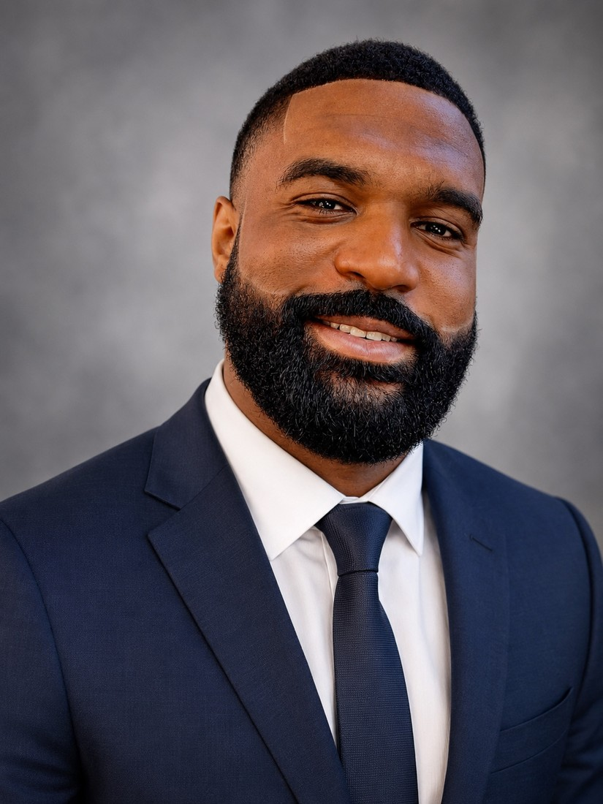

Derick Jermaine Gary
Cover Letter

My Intended Major
- Bachelor of Science in Information Technology: Data Networking and Security
- Projected Graduation: 2028
Experience Summary
I bring more than a decade of leadership, communications, emergency response, and public-service experience from the United States Marine Corps and the fire service. As a Fire Engineer, I operate emergency apparatus, support incident operations, train personnel, manage equipment, and make sound decisions in high-pressure environments. My military communications background and current information technology studies have strengthened my interest in networking, cybersecurity, systems improvement, and technical project leadership.
My Perceived Calling
I believe God is calling me to use leadership, service, and technology to protect and support others. My career goal is to combine the discipline I developed in the Marine Corps and fire service with technical knowledge in networking and security. I want to help organizations modernize systems, strengthen cybersecurity, and make decisions that serve both employees and the public with integrity.